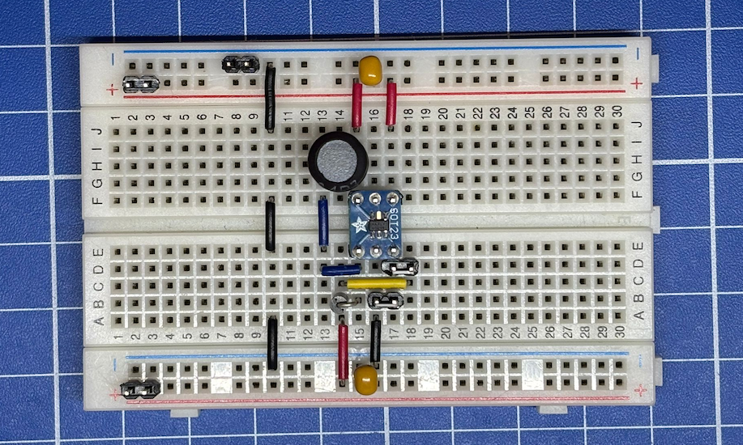
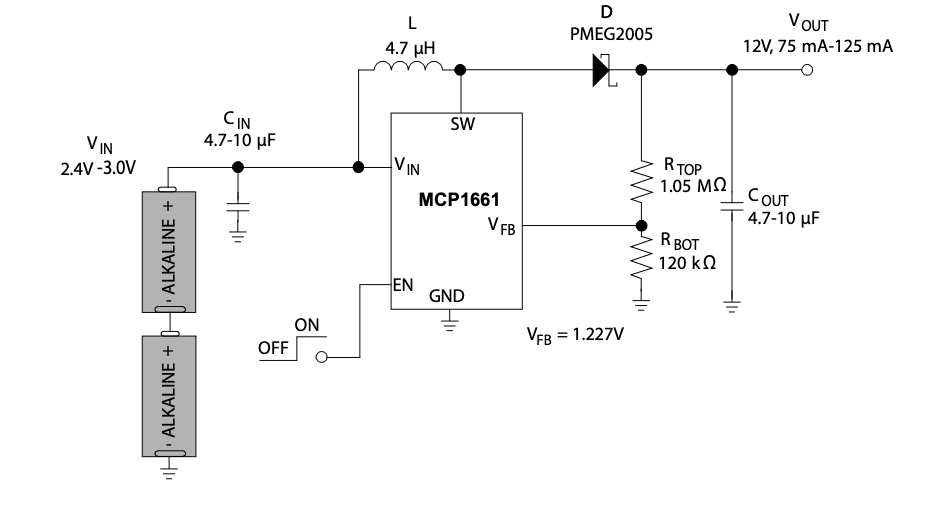
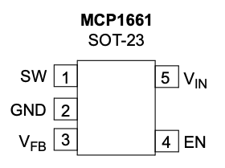
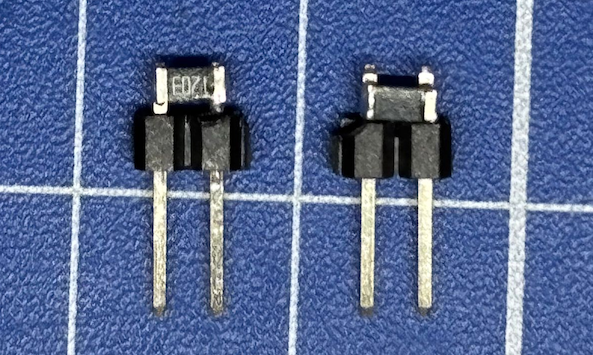

MCP1661

El MCP1661 es un regulador conmutado elevador (boost) por modulación por ancho de pulso (PWM) -¡en inglés suena mucho mejor!-. Este pequeño circuito permite elevar un voltaje de 3V hasta 12V y 120mA con apenas seis componentes. Permite diferentes configuraciónes por lo que te recomiendo que consultes el datasheet.

para configurar el voltaje de salida deseado, se configura combinando las resistencias RTOP y RBOT. Los capacitores CIN y COUT no afectan al voltaje de salida, pero mantenerse en el margen de 4.7uF hasta 10uF.
Con la siguiente formula podemos calcular las resistencias necesarias para obtener Vout:
Aquí hay una tabla con valores ya precalculados:
| Vout | RTOP | RBOT |
|---|---|---|
| 12V | 1.05MΩ | 120kΩ |
| 24V | 1.05MΩ | 56kΩ |
El encapsulado del MCP1661 es el SOT-23 y use un SMT Breakout PCB For SOT-23 de adafruit. Antes de montar el circuito en el breadboard ten en cuenta el pinout del componente.

Aquí va un pequeño truco: como usé resistencias SMD 1206 -que son muy pequeñas, pero aún manejables-, les soldé un par de pines header de 2,54 mm a cada una, y quedaron así:
